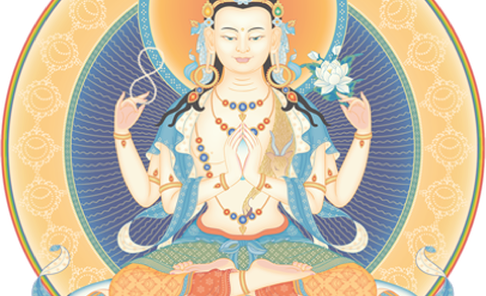
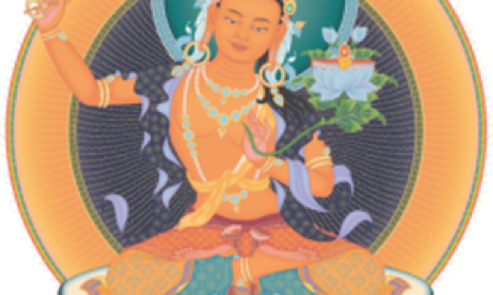
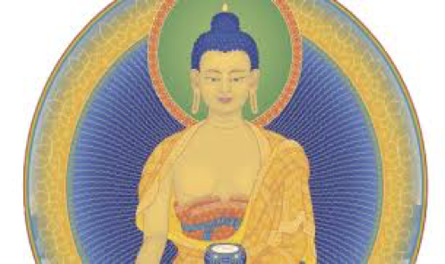

Oct. 6-12 Int'l Fall Festival - Germany
At this festival, Gen-la Dekyong will explain the essential practices of training the mind (Lojong) based on Venerable Geshe Kelsang Gyatso Rinpoche’s book Universal Compassion. The practices of training the mind are exceptionally powerful methods for overcoming our delusions, especially our self-cherishing, and for gaining deep realizations of conventional and ultimate bodhichitta. In this way, we can attain the real meaning of our human life – enlightenment.
Dec. 1-3 Southwest Dharma Celebration in New Mexico
Inspired by our Founder, Venerable Geshe Kelsang Gyatso, every year practitioners from the southwest US and beyond gather together for this special evenwonderft. The celebration will be a ul opportunity to receive teachings from our Western US National Spiritual Director, Gen Kelsang Rigpa, and to meet with spiritual friends. Enjoy the company of like-minded people, and empower your spiritual life at this special weekend event.
Nov. 3-5 The Midwest Dharma
This celebration is a very special annual event that connects practitioners around the Midwest. This relaxing weekend of practical teachings, guided meditations, and empowerment nourishes our spiritual life and increases our capacity for boundless inner peace and happiness. If you are new to Buddhism, the Celebration weekend provides a perfect opportunity to gain a deeper understanding and experience of Buddha’s teachings.